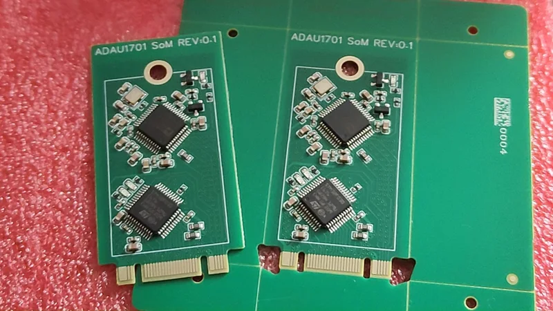
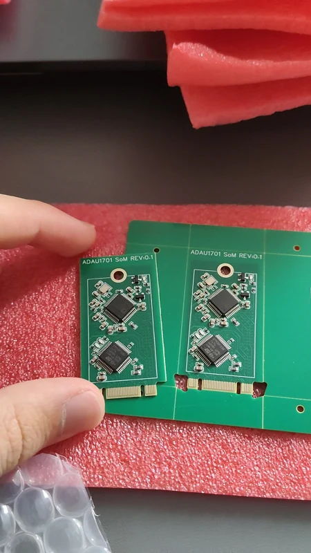

AUDIO DSP / EMBEDDED
ADAU1701 audio SoM
A reusable audio-processing core that puts a SigmaDSP and its companion STM32 on a compact plug-in module.

Project overview
I designed this System-on-Module to reuse the most complex part of an audio processor across several host boards. The same DSP core supports both my Eurorack module and effects-pedal platform.
The host board handles application-specific power, connectors, and analog level adaptation. Keeping the processing core common reduces repeated design work and makes small production batches more practical.
System & specifications
| DSP | ADAU1701 SigmaDSP |
|---|---|
| Microcontroller | STM32F030C6T6 |
| Analog channels | 2 inputs · 4 outputs through the DSP’s integrated converters |
| Clock | 12.288 MHz oscillator |
| PCB | 4 layers · 22 × 42 mm mechanical form factor |
| Connection | Custom audio/control pinout on an M.2-style edge connector |
*The M.2 2242 form factor is used mechanically. The custom interface is not a PCIe or NVMe device.
Hardware & startup
The ADAU1701 integrates audio conversion and signal processing. Its companion STM32 supplies the DSP program at startup, reads potentiometers and buttons, and updates processing parameters.
The module exposes analog audio, digital communication, and control connections through its edge connector. Each carrier scales its audio signals to the converter levels required by the shared core.
One core, two applications
The module boundary separates the reusable DSP and control electronics from the instrument interface. A guitar input and a Eurorack signal need different conditioning, but can share the same processing hardware.
See the effects pedal and Eurorack DSP module for the two carrier implementations.
Design & fabricated boards





Select an image to enlarge it.
CAD rotation & unboxing
Assembly and power-on footage documents the prototype state. Measured audio performance is not included in these clips.
Interactive 3D model
Inspect the board from every angle.
Load the board assembly to inspect component placement and connectors.
Converted from the current supplied STEP assembly, including its copper geometry. Some non-meshed annotations are omitted; use the CAD images for additional surface details.